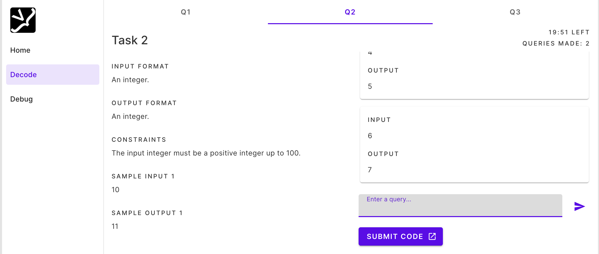

My Projects
> Program to show how stats taken out of context (in this case in the context of football) can display any player as the best in the world.
> Worked with a group of developers to set up a platform for the World Computing Championships by Eunoia Ventures. The WCC is a international competitive that has had multiple iterations since it's inception and has garnered hundreds of participants.

> Quick tool created to stylise text for "decknames" in popular online cardgame Legends of Runeterra